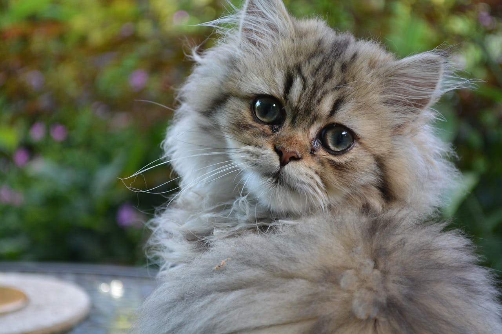

Pet Channel
| |
| แมวเปอร์เซีย (Persian) |
|  |
ลักษณะทั่วไป เมื่อเอ่ยชื่อถึงแมวพันธุ์นี้คงไม่มีใครไม่รู้จัก แมวเปอร์เซียมีถิ่นกำเนิดที่ตะวันออกกลางแถบเปอร์เซีย โดยแมวพันธุ์นี้ได้นำเข้ามาเลี้ยงที่ยุโรปและอเมริกานานกว่า 100 ปีแล้ว โดยแมวเปอร์เซียนั้น เป็นแมวที่มีขนาดกลางถึงขนาดใหญ่ มีกระดูกที่ใหญ่และแข็งแรง หัวและหน้ากลม หน้าผากโหนก แก้มเต็ม ดวงตากลมโต และอยู่ในตำแหน่งที่ห่างกัน โดยเอกลักษณ์ของแมวสายพันธ์นี้ก็คือมีจมูกที่หักนั้นเอง ส่วนนิสัยของแมวเปอร์เซียนั้นก็จะมีนิสัยขี้เล่น ซุกซนแต่พอดี สำหรับผู้ที่ต้องการที่จะเลี้ยงแมวพันธุ์นี้นั้นต้องเอาใจใส่พอสมควร เนื่องจากแมวเปอร์เซียนั้นมีขนที่ยาว ทำให้บางทีอาจเกิดการพันกันได้ ผู้เลี้ยงต้องหมั่นสางขน และทำความสะอาดเป็นประจำ |